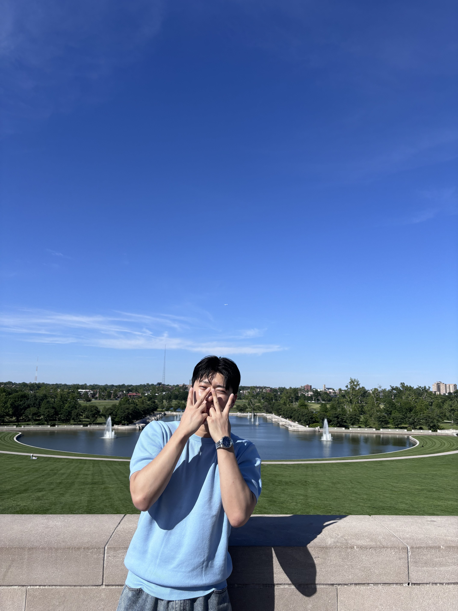

C3


Haemin Park
PhD Candidate, IEMS · Northwestern University
Evanston, IL Machine Learning, Optimization
I build machine learning systems that stay reliable when data is scarce, private, or unevenly distributed — federated training, efficient optimization, and generative models for detecting the rare cases that matter. I'm finishing my PhD and looking for research scientist or applied ML roles starting in 2026.
About
My research sits at the intersection of distributed learning and generative modeling. Real deployments rarely hand you clean, centralized, balanced data — so I work on methods that learn well anyway: training across clients that never share raw data, cutting the compute that training costs, and generating the rare examples a detector needs but a dataset doesn't contain.
Before Northwestern I worked on [previous role / lab], where I [one concrete accomplishment with a number in it]. I care about work that ships: reproducible code, honest baselines, and results that survive contact with a real dataset. Outside research I [one human detail — a hobby, a language, a side project].
Research interests
Federated Learning
Training across decentralized clients that never share raw data
Efficient Training
Getting the same accuracy for a fraction of the compute
Anomaly Detection
Finding the rare failure in a sea of normal observations
Diffusion Models
Turning noise into the data that a downstream model is missing
Research
Conference Papers
C2
C1
Journal Articles
J1
Projects
DualAnoDiff
Diffusion pipeline that generates paired defect images and pixel-level masks from as few as five real samples, lifting downstream segmentation IoU by 12 points on MVTec-AD.
FedCluster Benchmark
Reproducible benchmark comparing seven federated clustering methods across controlled non-IID splits. One command reproduces every table in the paper.
[Third Project]
One or two sentences. Lead with what it does and the outcome — a number, a benchmark, a user count — not the tech stack. The stack goes in the tags below.
Experience
2026 — 2026
Research Intern
[Company], [City]
- Built [thing] that improved [metric] by [X%] over the production baseline.
- Shipped [artifact] now used by [team / N engineers].
2022 — Present
Graduate Research Assistant
Northwestern University · [Lab Name]
- Lead author on [N] papers in federated learning and generative modeling.
- Mentored [N] undergraduate researchers; [outcome].
Education
2022 — 2027
PhD, Computer Science
Northwestern University · Advisor: [Prof. Name]
Thesis: [Working title]
2018 — 2022
BS, [Major]
[University], [City]
[Honors, GPA if strong, or a notable thesis.]
Skills
Languages
PythonC++SQLBashKorean (native)
ML
PyTorchJAXHugging Facescikit-learnDiffusion modelsFederated learning
Infra
DockerSlurmWeights & BiasesGitAWS
Contact
I'm on the job market for research scientist and applied ML roles starting in 2026. Happy to talk about collaborations, papers, or anything above.
you@example.com